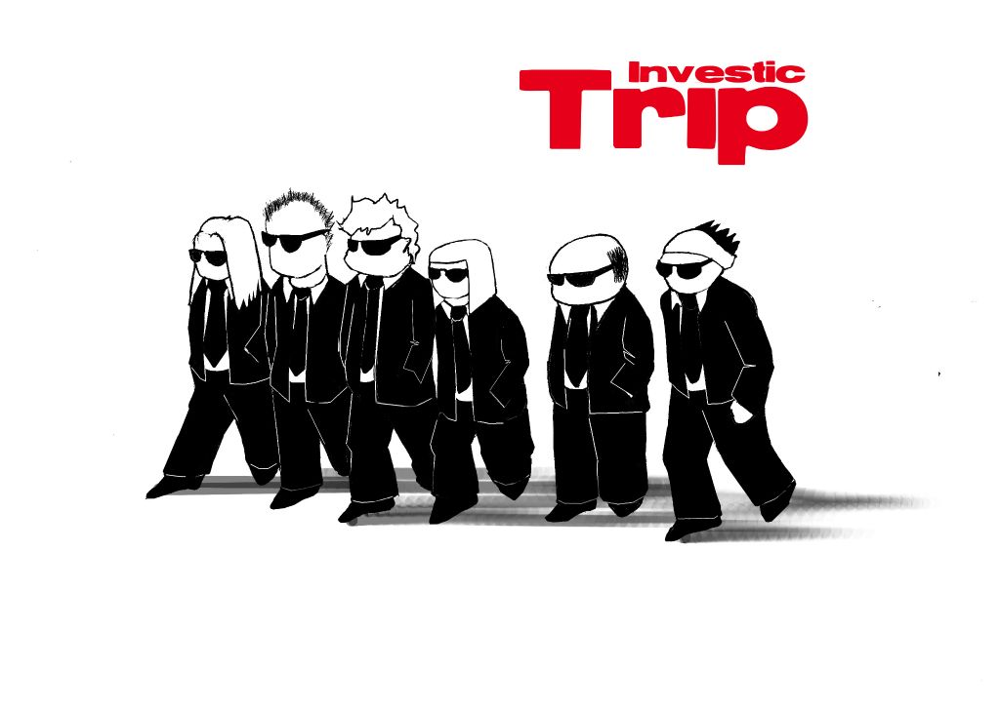

De juegos, jugones, comunidades y economía
Debemos prepararnos para tomar control creativo de la época venidera. Una época tan poéticamente rica como infinitamente victoriosa, tan cargada de significado que sólo aquellos preparados para sumergirse en el cataclismo transcenderán esa singularidad.
Ya no queda fuerza en la normalidad; solo rutina
El fuego sagrado Bruce sterling
Ya no queda fuerza en la normalidad; solo rutina
El fuego sagrado Bruce sterling
Soy Karlos g Liberal
...también se me conoce como patxangas

1999: KrAsK
El inicio

2001: i-zauber
Crecemos

2003: Kernel Panic
Mutamos
2003: Gatakka
Desaparecimos

En la escuela había utilizado consolas, juguetes que te llevaban a través de
los confines infinitos de un espacio que no era tal, la increíblemente
compleja alucinación consensual de la humanidad, la matriz, el ciberespacio,
donde los enormes núcleos de las corporaciones ardían como novas de neón, tan
llenos de datos que te sobrevenía una sobrecarga sensorial si intentabas
aprender algo más que un leve esbozo.
Conde cero William Gibson
Conde cero William Gibson
Cooperativa Investic

Juegos de Rol

Vídeo big bang Theory (2:57)
Elementos de un juego de Rol
- Director de Juego o Master
- Jugadores
- Los personajes de los jugadores
- Los personajes no jugadores
-
- Sistema de juego
- Dados
Sistemas de Juego
- SD6 (Pdf)
- Cthulhu Oscuro (Pdfs)
World of Warcraft
La épica online mas importante de todos los tiempos
Wrath of the Lich King
Primeros pasos en el Wow
El lado Oscuro
Comprar oro